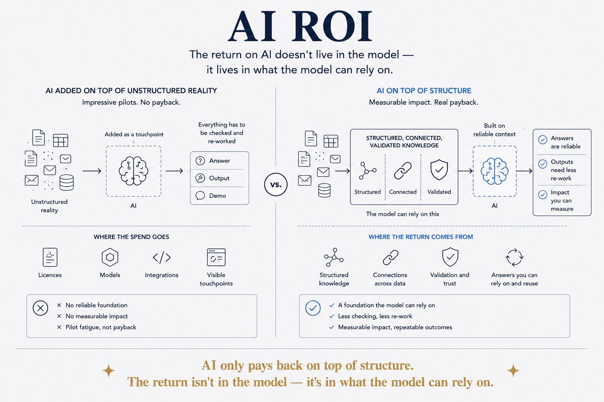

AI only pays back on top of structure. The return isn't in the model — it's in what the model can rely on.

The return on AI doesn't live in the model — it lives in what the model can rely on. Most AI initiatives never deliver measurable impact, and the failures share a shape: the AI was added as a touchpoint on top of unstructured reality, so every answer had to be checked, every output re-worked, every demo re-explained. Impressive pilots, no payback. The spend went to the visible part (licences, models, integrations) while the thing that produces the return — structured, connected, validated knowledge underneath — was assumed to already exist. It almost never does.
The economics follow directly from the toy/instrument distinction. A toy has negative ROI by construction: whatever it produces must be verified by a human who could have done the work, so the cost stays and a new cost is added. An instrument pays back because its output can be relied on — used without re-checking, repeated without re-prompting, built upon. Reliability is the entire difference between AI as expense and AI as leverage, and reliability comes from structure, not from a better model.
That reverses where the money should go. The instinct is to spend on AI and treat data structure as plumbing to fix later; the return says spend on the structure and rent the AI. Models are interchangeable and get cheaper every quarter — the structured knowledge they run on is the asset that compounds, and it's the part competitors can't copy by buying the same licence.
And ROI is not projected, it's demonstrated — which is where the experiment loop earns its keep at business scale. Start with a real business question, run a small fast experiment on top of real structure, measure what came back, decide. A deck full of projected returns convinces no one who has seen a pilot die; a small loop that already paid for itself is a different conversation entirely.